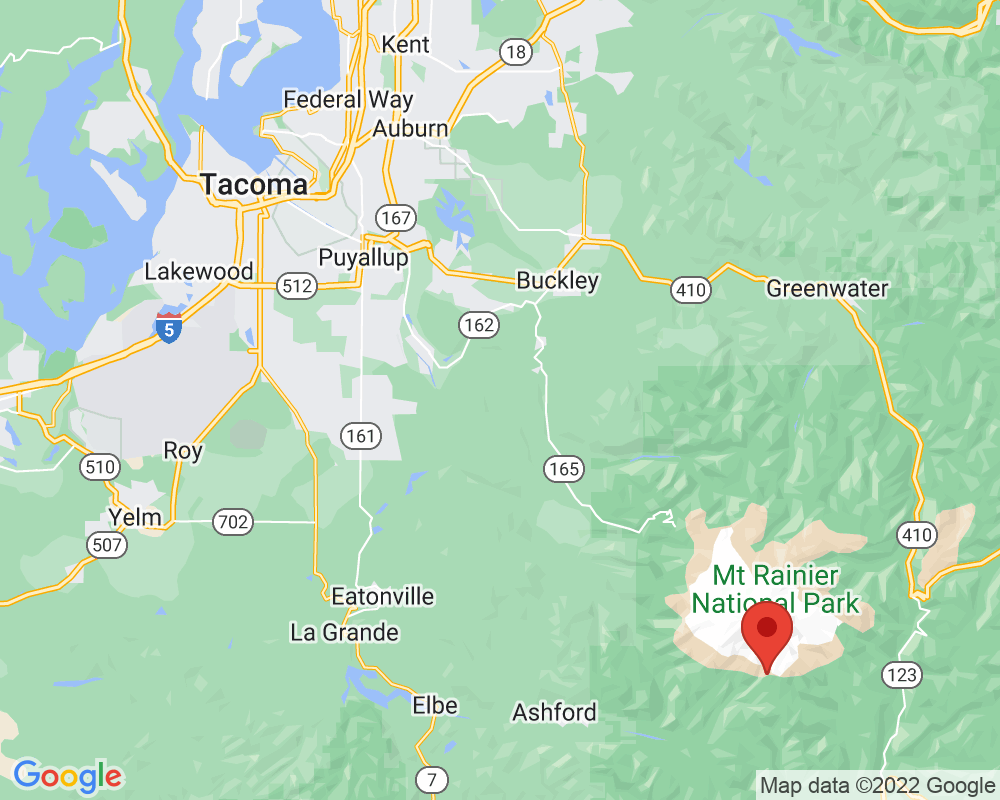

Paradise in July
Paradise is the most popular place to visit on Mt. Rainier. In July, about half of the snow has melted. People can go hiking, but they usually bring hiking poles and special spikes that can go on their boots so they don't slip.
Visited: July 19, 2022 at 6:06 PM
Location: Paradise
